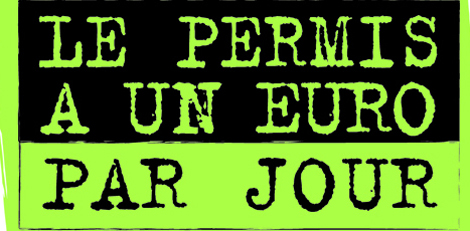

🚗 PERMIS VOITURE (B)
Formation complète pour la catégorie B. Conduite traditionnelle, automatique ou apprentissage anticipé — choisissez la formule qui vous convient.
Permis B Classique
C'est pour cela que l'auto école Labussiere assure une formation de qualité tant au niveau de la partie théorique (code de la route) que pratique (conduite automobile).
La formation pratique débutera ainsi par une évaluation puis comportera 20 heures de conduite (minimum obligatoire), une préparation et une présentation à l'examen.
Le permis B est l'examen numéro 1 en France. Il y a donc sans cesse de plus en plus de conducteurs sur la route ce qui fait que le niveau requis pour son obtention est de plus en plus élevé.
Conduite Accompagnée
Il est possible d'apprendre à conduire de manière anticipée, dès 15 ans en conduite accompagnée.
Cette formation permet d'acquérir une certaine expérience au jeune conducteur mais également de rassurer ses parents (accompagnateurs) sur ses capacités à se mouvoir dans le trafic automobile. Les primes d'assurance sont également moins élevées pour un jeune conducteur étant passé par l'apprentissage anticipée de la conduite.
La formation comprend 3 étapes :
- Formation initiale dans une auto-école
- Conduite accompagnée d'un adulte, avec un suivi pédagogique par l'auto-école
- Présentation au permis de conduire
L'étape de conduite accompagnée doit se faire sur minimum 3000 kilomètres et 1 an.
La formation initiale comprend le code de la route, l'évaluation de départ, les 20 heures minimum obligatoires et le rendez-vous préalable d'une durée de 2 heures (2 heures en présence du jeune, de ses accompagnateurs et de l'enseignant).
Permis B Boîte Automatique
Le permis B en boîte automatique est identique au permis B classique (en boîte manuelle) sauf que son minimum légal d'heures de conduite est de 13 heures.
La boîte automatique permet de se libérer des contraintes et difficultés liés au passage de vitesse. Il est donc plus aisé de rentrer vraiment dans le vif du sujet de la conduite. C'est à dire gérer les intersections, les autres conducteurs, observer etc...
Grâce à une formation "passerelle" de 7 heures, il est possible de "transformer" un permis B Automatique en Permis B classique.
Passerelle B78 → B Automatique
Grâce à une formation "passerelle" de 7 heures, il est possible de "transformer" un permis B Automatique en Permis B classique.
📋 PIÈCES À FOURNIR
Avant de commencer votre formation, vous devez nous apporter les documents suivants :
- Photocopie recto-verso de votre pièce d'identité (CNI ou passeport)
- Photo d'identité au format e-Photo
- Attestation de recensement ou de participation à la journée d'appel (pour les moins de 25 ans)
- Justificatif de domicile datant de moins de 3 mois (facture d'électricité, gaz, eau, téléphone, etc.)
- Attestation d'hébergement (si vous logez chez quelqu'un) + photocopie recto-verso de la pièce d'identité de l'hébergeant
- 3 timbres au tarif en vigueur
- Photocopie de vos permis déjà obtenus (AM, A1, etc. si applicable)
ℹ️ Important : N'oubliez pas d'apporter ces documents à votre première visite ! Nous vérifierons tout cela ensemble lors de la constitution de votre dossier.
💰 PERMIS À 1€ PAR JOUR

Une solution de financement accessible pour les 15-25 ans
Notre établissement est à même de vous proposer le permis à 1€ par jour si vous avez entre 15 et 25 ans. C'est un prêt dont les intérêts sont pris en charge par l'État.
Comment ça fonctionne ?
- ✓ Montant maximal : 1200€ empruntés
- ✓ Remboursement : 30€ par mois pendant la durée nécessaire
- ✓ Intérêts : Entièrement pris en charge par l'État
📌 Applicable à : Permis B classique, boîte automatique ou conduite accompagnée (AAC)
Contactez-nous pour connaître les modalités exactes et vérifier votre éligibilité. Nos équipes vous accompagneront dans les démarches administratives.
👥 CONDUITE SUPERVISÉE
Pour les adultes qui souhaitent progresser à leur rythme
La conduite supervisée est une formation flexible destinée aux adultes de 18 ans et plus. Elle permet de bénéficier d'une accompagnement renforcé après votre formation initiale, en complément ou après un échec à l'examen pratique.
Caractéristiques de la formation :
- → Flexibilité : Adaptez votre formation à votre emploi du temps
- → Apprentissage progressif : Augmentez graduellement votre confiance au volant
- → Accompagnement personnalisé : Travaillez vos points faibles avec nos moniteurs
- → Limites de vitesse adaptées : Des restrictions légales pour votre sécurité
ℹ️ À savoir : Contrairement à la conduite accompagnée, la conduite supervisée n'a aucun minimum de durée ni de kilométrage obligatoire. Vous progressez à votre rythme ! Elle ne réduit pas votre période probatoire, mais elle vous prépare efficacement à l'examen avec un suivi rapproché.
Idéale si vous manquez de confiance, si vous avez échoué à un examen ou simplement si vous préférez une approche moins intensive.
Prêt à commencer ?
Inscrivez-vous dès maintenant et commencez votre formation au permis voiture.
Nous contacter